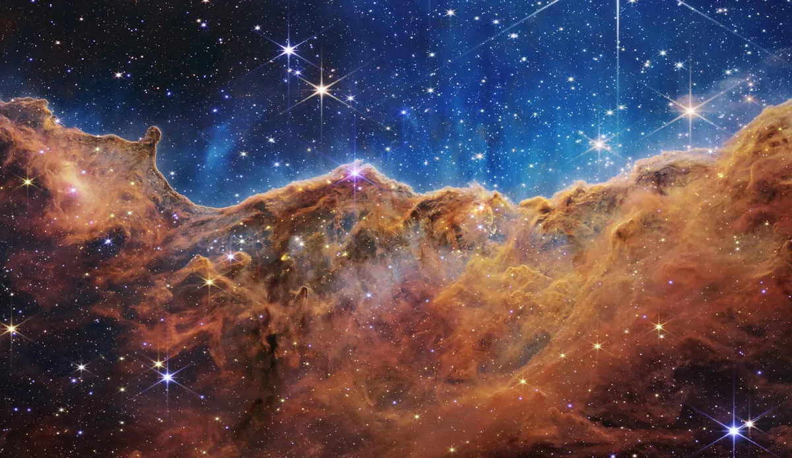
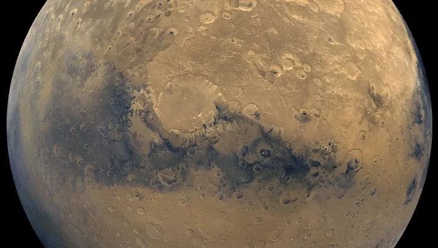

Deep space field
NASA's picture of the day is on its way.
Open on apod.nasa.govMission log · Earth → Mars
Three NASA archives in one place: today's astronomy picture, raw photos from the Mars rovers and more than 140,000 images from NASA's library.
Connecting to NASA…
01 · APOD

NASA's picture of the day is on its way.
Open on apod.nasa.gov02 · Rover cam

03 · Archive